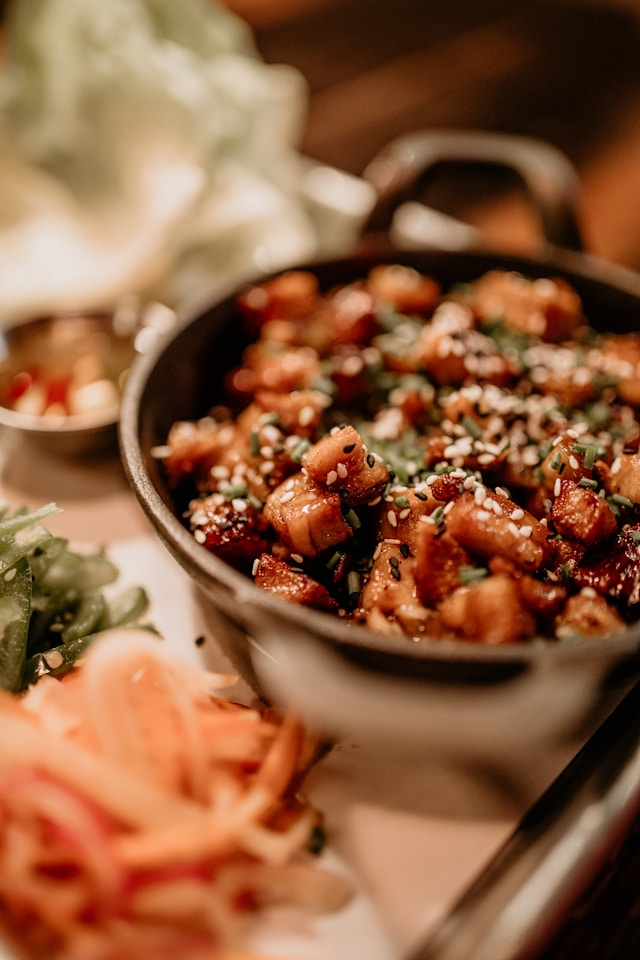

Sushi Bowl

Description
This Sushi Bowl is a fast recipe for those days when you dont want to cook a long time, als long as you have a Airfryer
Ingredients
- Sushi Rice
- Salmon 150g
- Cucumber
- Avocado
- Rice Vinegar
- Sugar
- Soy Souce
- Mayonaise
- Sirracha
Steps
- Get your salmon out of the freezer and wait until he is room temp, you can also use a warm waterbath
- Put the salmon into the airfryer at recommended settings or 200 degrees and for 11 minutes
- Cook your rice
- Season it with a mix of rice vinegar, sugar and water
- Cut your vegtables
- Make a souce out of mayonaise and sirracha
- Put everything together and mix to your liking
- For extra saltyness, use some soy souce
Home